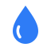
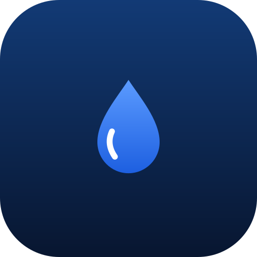
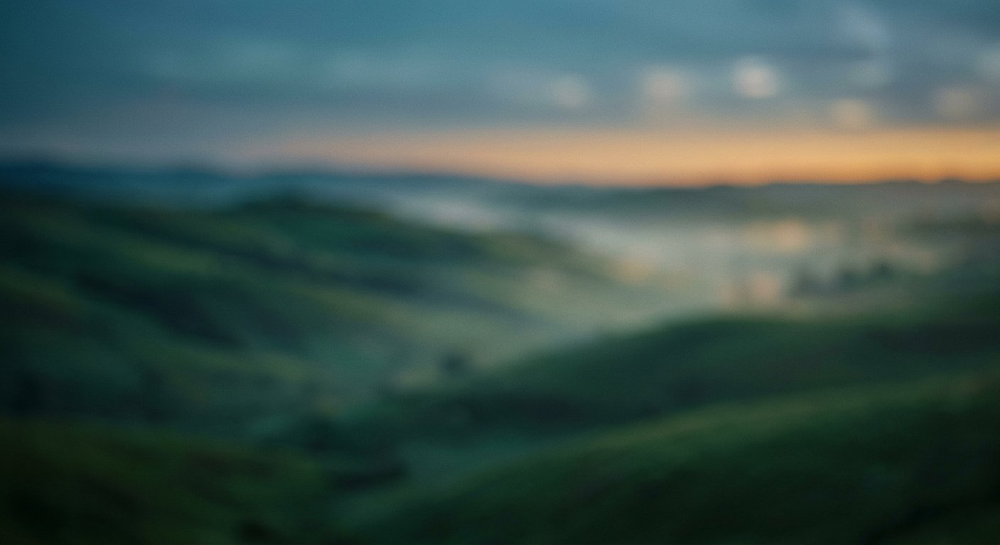
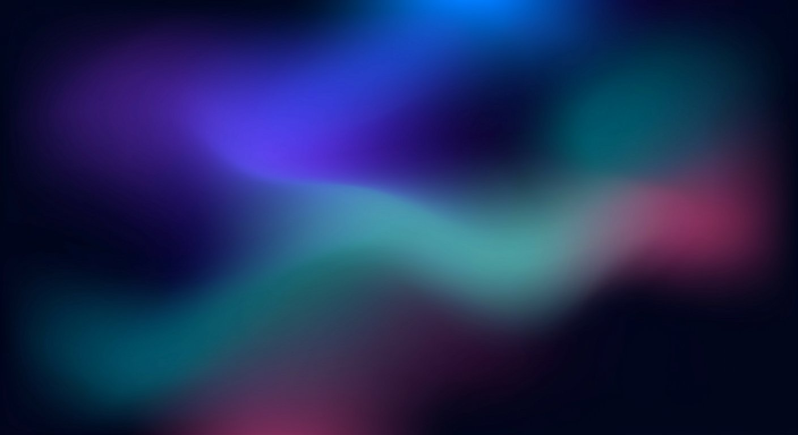

The Sippy design language
Everything on this page is a real, final asset or a faithful demo of one — the foundation the website (Phase 2) and the app (Phase 4) are built from. Dark theme is the hero; flip the switch top-right to verify light theme is finished, not an afterthought.
Logo mark — geometric droplet, stroke-animatable
Single continuous path (intro beat 2 draws it, beat 3 fills it, glint lands last). Same geometry powers the favicon and the adaptive app icon.
Files: shared/logo/logo.svg (stroke-animatable, pathLength normalised) · shared/logo/favicon.svg

Design tokens (single source → CSS + Compose)
Colours, radii, blur levels, springs and grain are defined once in shared/tokens.md and consumed by both products. Contrast pairs are WCAG AA-checked for the theme they appear in.
Palette
Radii — capsules & continuous corners only
pill · card · inner
Springs (stiffness / damping / mass)
| base | 300 / 30 / 1 — presses, toggles |
|---|---|
| gentle | 220 / 24 / 1 — sheets, panels |
| snappy | 500 / 38 / 1 — tab lens, chips |
| float | 120 / 16 / 1.2 — idle, mascot breath |
Blur tiers 24 / 32 / 40px with 165% backdrop saturation — the same values the app tiers use.
The glass recipe — every layer from the brief
Backdrop blur + saturation boost · tint · 1px gradient rim (brighter top-left) · inner highlight · layered shadow · 3% noise grain · refraction in Phase 2/4. Move your pointer over the card for the specular. Press the button — it scales to 0.97 and springs back.
- backdrop-filter: blur(32px) saturate(165%)
- tint: white 8% (dark) / 52% (light)
- rim: 1px gradient, top-left 40% → mid 5% → 18%
- depth: 3-layer shadow + inner top highlight
- grain: SVG noise @ 3%, mix-blend overlay
The shimmer sweep on “Get Sippy” is a CSS stand-in — Phase 2 ships the real @glinui/ui ShimmerButton (glass variant, shimmerColor/shimmerDuration, reduced-motion compliant).
Liquid lens that stretches and morphs between tabs (reference 4) — the same mechanic the app’s bottom tab bar uses (adapted from Kyant0’s LiquidBottomTabs, API verified).
App icon — adaptive, glass droplet on deep Sippy Blue
Real Android vector XML is ready to drop into res/ in Phase 4a (shared/icon/ic_launcher_*.xml), sized to the adaptive safe zone.

Backdrops — glass only lives over rich backdrops
Two generated photographic backdrops (credited in CREDITS.md) plus the procedural aurora mesh running live behind this whole page (spec: shared/docs/aurora.md).

hero / showcase backdrop

app home / bento backdrop (reference 4)